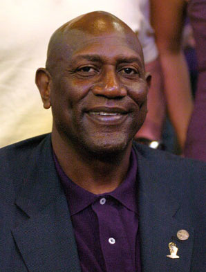

|
Scott Tarter Scott is a partner at the Indianapolis law firm of Bose McKinney & Evans, where he serves as a member of the Firm's Executive Committee and Chairs the Firm's international Law Practice Group. His focus is on mergers and acquisitions, as well as international business, and he has served on the Boards of several non-profit organizations. |
John Abrams, M.D. John is an Ophthalmologist and owner of Abrams EyeCare Associates, as well as the team eye physician for the Indiana Pacers, Indiana Fever, Butler University Athletics and the Indianapolis Motor Speedway. He was a ball boy for the ABA Pacers. He currently serves on several non-profit Boards. |
|
Ted Green Ted is the founder of Ted Green Films, LLC. Partnering with WFYI, he has produced five documentaries since 2010 and won several regional Emmys and national awards. His past two films were "Undefeated: The Roger Brown Story" (currently on ESPN Classic) and "Bobby 'Slick' Leonard: Heart of a Hoosier." |
Scott Tarter
Co-Founder, President
John Abrams
Co-Founder, Chairman of the Board
Ted Green
Board Member
|
Bob "Slick" Leonard Slick is a former NCAA basketball champion, NBA player, 3-time ABA champion coach, 2014 Naismith Memorial Basketball Hall of Fame inductee, and currently the Pacers Radio Color Commentator. |
Bob Costas Bob is an NBC and MLBN broadcaster who has won twenty-six Emmy awards – recognizing him in categories of hosting, play-by-play, writing, journalism, news, and entertainment. Bob will be hosting his 7th Super Bowl in February of 2015 on NBC. |
|
Mel Daniels Mel is a 2012 Naismith Memorial Basketball Hall of Fame inductee, 2-time ABA MVP, 7-time ABA all-star, and 3-time ABA champion. He is also the all-time ABA rebounds leader. |
Bob Netolicky Bob is a former All-American at Drake University, a 2-time ABA champion, and 4-time ABA all-star. |
|
Dan Issel Dan was elected to the Naismith Memorial Basketball Hall of Fame in 1993 and won the NBA's J. Walter Kennedy Citizenship Award in 1985. He was an ABA champion in 1975, 6-time ABA all-star, and an NBA all-star. |
Peter Vecsey Peter is a sports columnist, winner of the Curt Gowdy Media Award, member of the National Basketball Hall of Fame, NYC Basketball Hall of Fame and Rucker Basketball Hall of Fame, and an analyst for NBC, TNT and NBA TV. |
|
George Gervin George was elected to the Naismith Memorial Basketball Hall of Fame in 1996. He was a three time ABA All-Star, nine-time NBA All-Star, 4 time NBA scoring champion, named one of the 50 Greatest Players in NBA History and named to the All Time ABA team. |

Spencer Haywood Spencer is an ABA MVP, ABA Rookie of the Year, and ABA all-star MVP, as well as NBA Champion, 4-time NBA all-star, and US Olympic gold medalist (1968). |
|
George McGinnis George is a former Indiana Pacer and a 2-time ABA champion, 3-time ABA all-star, and 3-time NBA all-star. He was awarded ABA MVP honors in 1975. |
Mack Calvin Mack is a 5-time ABA all-star and played 7 seasons in the ABA as well as 4 seasons in the NBA. He also set ABA records for most free throws made (696) and most free throws attempted (805) in one season. |
|
David Craig David is a long time athletic trainer for the ABA and NBA Indiana Pacers, and winner of the Joe O'Toole NBA Athletic Trainer of the Year Award in 2004. He served as US athletic trainer for the 2003 Pan American Games and 2004 Olympic team. |
Brian Taylor Brian is a 2-time ABA champion, 2-time ABA all-star, 2-time member of the ABA All-Defensive First Team, and ABA Rooke of the Year (1973). |
|
Nancy Leonard Nancy is a real estate broker, former Business Manager of the Indiana Pacers, and wife of Bob Leonard. |
Bob "Slick" Leonard
Advisory Board Member
Bob Costas
Advisory Board Member
Mel Daniels
Advisory Board Member
Bob Netolicky
Advisory Board Member
Dan Issel
Advisory Board Member
Peter Vecsey
Advisory Board Member
George Gervin
Advisory Board Member
Spencer Haywood
Advisory Board Member
George McGinnis
Advisory Board Member
Mack Calvin
Advisory Board Member
David Craig
Advisory Board Member
Brian Taylor
Advisory Board Member
Nancy Leonard
Advisory Board Member
Copyright © 2014 Dropping Dimes Foundation, Inc. All rights reserved. | Web Development provided by Open Mind Webs